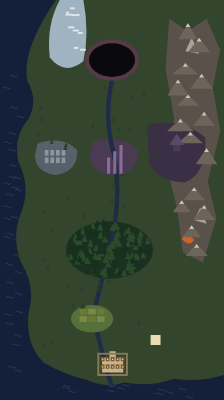

The world map
First shown when the Titan falls at the end of A Tale of Valor's prologue, then between acts. North is up. The city (unnamed) is on the south coast where the run starts, Wild's Edge just north of it, and every other place lies on the road north to the Titan's crater. The river runs out of the crater, through the forest, down to the city at its mouth. The layout is the same in every treatment; only the drawing changes. Docs: docs/world-map.md.
Moment:
The city:
Painting (A):

The layout the painting was made from. Laid by hand so the geography is exactly the doc's, then painted over in PixelLab. Moving a place on the painted map means re-laying this and repainting; the two vector treatments only change a coordinate.